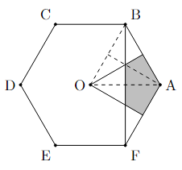

Little Mandarin
This is a game built using Next.js, (React and Javascript) that combines the spirit of Little Alchemy with the knowledge of Mandarin characters. Combine simpler characters and basic Chinese strokes together to form more complicated characters!
Air Quality in the Big Apple
This is a visualization of the air quality of New York City in terms of the concentrations of ozone, nitrogen dioxide, and fine particulate matter from 2009 to 2022. The original data can be found on the NYC Open Data Catalog and is provided by the New York City Department of Health and Mental Hygiene. This project was originally my final project for my Data Visualization class in May 2024, but I have expanded it from its previous version.
Previous Completed Projects
Future Projects
Visualization of MTA Ridership Time Series data
Math Question Generator (using Machine Learning). This would be fed a specific set of theorems that can be used, which represents the expected knowledge of the test takers.
Math
From number theory to Gödel's incompleteness theorems, math is a form of art that follows a logical set of rules. Math, both applied and theoretical, to me, is an attempt to make sense of our understanding of the world and the weird things that happen in it. In high school, math was the most important of my extracurriculars. I was on the Stuyvesant Math Team all four years and on the NYC Math Team for three years. I was an assistant captain in my final year, and was also the captain of some team contests we participated in. That year, I was also a finalist in the 2021* Princeton University Math Competition.
Now in college, I am a writer for the NYCIML contest and a writer for the mathleague.org contest series. While in high school, I felt stronger with combinatorics (combo) and probability, my experience writing and editing questions have made me more well-rounded and have caught my skills up in the other sectors (algebra, number theory, and geometry) to that in combo. Some of my sample questions can be found below, in no particular order. Have fun!
Expected Value Audrey has a spinner with three equal parts, one red, one green, and one blue. She also has a fair coin. She spins the spinner to start a game. If she lands on red, the game is done. If she lands on green, she flips the coin once. If she lands on yellow, she spins the spinner again. If she flips the coin and she lands on heads, she spins the spinner once. If she flips the coin and she lands on tails, the game is done. On average, how many times will she flip the coin before the game is done?
The spinner has three sections, but because if she lands on yellow she will just spin the spinner again, it effectively only has two sections, green and red, and these two sections occur with equal probability. In order for her to finish the game without flipping the coin at all, she must have landed on red, which occurs with probability $\frac{1}{2}$. Otherwise, she flips the coin at least once. If she flips the coin exactly once before the game ends, then she must have landed on green, then either flipped tails or flipped heads followed by another spin on red. The probability she flips tails from the very beginning is $\frac{1}{2} \times \frac{1}{2} = \frac{1}{4}$, while the probability that she flips heads and then lands on red is $\frac{1}{2} \times \frac{1}{2} \times \frac{1}{2} = \frac{1}{8}$. This means the probability she flips the coin exactly once is $\frac{1}{4} + \frac{1}{8} = \frac{3}{8}$. Notice that when she flips the coin, the future outcomes are independent of what has already occurred. This means that in the remaining probability that she gets to flip the coin a second time, which occurs with probability $1 - \frac{1}{2} - \frac{3}{8} = \frac{1}{8}$, the chance she will flip the coin a third time is going to be $\frac{1}{4}$ of the time, since at this point $\frac{1}{2}$ of the time she will flip tails and end the game, and $\frac{1}{4}$ of the time she will flip heads and then spin red. Then her weighted probability of the number of times she will flip the coin is $0 \times \frac{1}{2} + 1 \times \frac{3}{8} + 2 \times \frac{3}{8} \times \frac{1}{4} + 3 \times \frac{3}{8} \times \frac{1}{4} \times \frac{1}{4} + \cdots$. This can be simplified as $\frac{3}{8} \times \left( 1 + 2 \times \frac{1}{4} + 3 \times \frac{1}{4} \times \frac{1}{4} + \cdots \right)$. This inner sum can be considered as $\left(1+\frac{1}{4} + \frac{1}{4} \times \frac{1}{4} + \cdots \right) + \left(\frac{1}{4} + \frac{1}{4} \times \frac{1}{4} \right) + \left( \frac{1}{4} \times \frac{1}{4} + \cdots \right) + \cdots$. The first geometric series is equal to $1 + \frac{1}{4} + \frac{1}{16} + \cdots = \frac{4}{3}$, while each after that is $\frac{1}{4}$ the value. This means the infinite sum is $\frac{4}{3} + \frac{4}{3} \times \frac{1}{4} + \frac{4}{3} \times \frac{1}{4} \times \frac{1}{4} + \cdots = \frac{4}{3} \times \frac{4}{3}$, which is $\frac{16}{9}$. Therefore, the number of times she will flip the coin on average is $\frac{3}{8} \times \frac{16}{9} = \boxed{\frac{2}{3}}$.
Geometry
Let $O$ be the center of regular hexagon $ABCDEF$, and let $P$ be a randomly selected point inside $ABCDEF$. What is the probability that $P$ is closer to $A$ than it is to any of $B$, $C$, $D$, $E$, $F$, or $O$?
Draw a line perpendicular to $AB$ and halfway between $A$ and $B$, through $O$, as shown below. The points closer to $A$ than to $B$ are on the same side of this line as $A$. Similarly, the points closer to $A$ than to $F$ are on the top side of the line halfway between $AF$. Since this is a regular hexagon, $OBA$ is an equilateral triangle; so the line halfway between $O$ and $A$ is the height from $B$, which is $BF$. Since $OCB$ and $OAB$ are congruent triangles, the line halfway between $A$ and $C$ is $OB$, and the line halfway between $A$ and $E$ is $OF$. Finally, the line halfway between $A$ and $D$ is the vertical line through $O$. None of these $3$ lines affect the area which is closer to $A$ than to any other vertex, shown by the shaded region below. Now, consider triangle $OBA$. It can be divided into $6$ equal regions, as shown by the dotted lines. Of these, $2$ lie within the shaded region. Another $2$ triangles of the same size make up the rest of the shaded region, below $OA$. The hexagon contains a total of $6 \cdot 6 = 36$ such triangles, so the desired region is $\frac{4}{36}$ of the hexagon, or $\boxed{\frac{1}{9}}$.

Combo
Bob has $10$ baskets numbered $1$ to $10$. Given that the $n$th basket has $n$ distinct fruits in it, compute the number of ways for Bob to choose two fruits from different baskets.
The total number of pairs of fruits is $\binom{55}{2}$ because there are $1+2+\cdots+10=55$ fruits. The number of pairs of fruits in the $n$th basket is $\binom{n}{2}$. So, the number of pairs of fruits from different baskets is $\binom{55}{2} - \binom{1}{2} - \binom{2}{2} - \cdots - \binom{10}{2}$. By the Hockey Stick Identity, this simplifies to $\binom{55}{2} - \binom{11}{3} = \frac{55 \cdot 54}{2 \cdot 1} - \frac{11 \cdot 10 \cdot 9}{3 \cdot 2 \cdot 1}$. This simplifies to $55 \cdot 27 - 11 \cdot 5 \cdot 3 = 11(135 - 15) = \boxed{1320}$.
Game Theory
There are $10$ cards on a table numbered with the whole numbers from $1$ to $10$, inclusive. Troy and Ben then play a game with these cards, with Troy going first. With the numbers showing, they take turns removing one card at a time until there are two cards left on the table. In addition, Troy wants to minimize the difference between the numbers on the last two cards, and Ben wants to maximize the difference between the numbers on the last two cards. Given that both players will always play to maximize their ability to achieve their own goals, what will the positive difference between the numbers on the last two cards be?
Troy is trying to minimize the difference between the last two numbers showing, so he can guarantee a difference of no more than $5$ by removing the four largest or the four smallest numbers from the table. Now consider Ben's strategy. To ensure that the difference between the final two numbers will take its maximum value of $5$, he can pair cards with numbers that have a positive difference of $5$. Regardless of which card Troy removes, Ben will always remove the other card in that pair, so the last two cards on the table must be one of those pairs. Thus, since Troy can guarantee a positive difference of no more than $5$ and Ben can guarantee a positive difference of no less than $5$, the numbers on the two final cards will always have a positive difference of $\boxed{5}$.
Number Theory
Compute the smallest positive whole number that yields a remainder of $5$ when divided by $7$, a remainder of $7$ when divided by $11$, and a remainder of $11$ when divided by $13$.
Let $n$ be the smallest such number. By the Chinese Remainder Theorem, $n \le 7 \cdot 11 \cdot 13 = 1001$. Since $n$ leaves a remainder of $5$ when divided by $7$ and a remainder of $11$ when divided by $13$, it stands to be the case that $n+2$ is divisible by both $7$ and $13$, so $n+2$ is a multiple of $91$. However, $n$ leaves a remainder of $7$ when divided by $11$, so $n+4$ is a multiple of $11$. Thus, $n+4$ is a multiple of $11$ that is $2$ greater than a multiple of $91$. Since $91$ leaves a remainder of $3$ when divided by $11$, $91 \cdot 3$ leaves a remainder of $9$ when divided by $11$. Thus, $n+2 = 91 \cdot 3$, which is $273$, and $n+4 = 275$, which is $11 \cdot 25$. Therefore, $n = \boxed{271}$.
Probability
Kayla the frog is hopping between lily pads arranged in a $3 \times 3$ grid pattern. She starts on the center lily pad and makes $10$ jumps, each time to a random lily pad that is adjacent to the one she is currently on. Compute the probability that after $10$ jumps, she returns to the center lily pad. Express your answer as a common fraction.
Notice that no matter which direction Kayla jumps to after her first jump, the grid can be rotated such that she ends up on the middle lily pad in the top row. Thus, by radial symmetry, the four lily pads that are adjacent to the center yield symmetrical cases. Furthermore, notice that after every other jump, Kayla will end up on one of these four lily pads, since the grid can be painted with an alternating checkerboard pattern that forces Kayla to switch the color she stands on with each jump. Combining these two points indicates that after her ninth jump, she will be on one of these four lily pads, and without loss of generality, it can be assumed that she is on the middle lily pad in the top row. Then she has $3$ choices for her tenth jump, one of which lands her on the center lily pad. The desired probability is $\boxed{\frac{1}{3}}$.
3D Geometry
Every face of a right square pyramid has an area of 64 square meters. The volume of the pyramid can be expressed in the form $\frac{a\sqrt{b}}{c}$ cubic meters, where $a$, $b$, and $c$ are positive integers, $b$ is not divisible by the square of a prime, and $a$ and $c$ are relatively prime. Compute $a+b+c$.
The base of the pyramid is a square whose area is 64 square meters, so the side length of the square base is 8 meters. Each of the triangular faces of the pyramid also has an area of 64 square meters, so the height of each triangle is $64 \cdot 2 \div 8 = 16$ meters. This is the distance from the apex, which is the vertex of the pyramid not in the square base, to the midpoint of one side of the square. This is also called the slant height of the pyramid. The center of the base forms a right triangle with the apex and this midpoint. The distance between the center of the base and the midpoint is half the side length of the square, so this distance is $8 \div 2 = 4$ meters. By the Pythagorean Theorem, the height of the pyramid, which is the distance from the apex to the center of the base, is $\sqrt{256-16} = 4\sqrt{15}$ meters. Therefore, the volume is $\frac{1}{3} \cdot 4\sqrt{15} \cdot 8 = \frac{32\sqrt{15}}{3}$ cubic meters, so $a+b+c = 32+15+3$, or $\boxed{50}$.
Probability
Noel rolls a fair, standard six-sided die until he rolls the same number two times in a row. What is the probability that he will roll the die four or fewer times?
Rolling the die four times is equivalent to having three chances of rolling the same number. On each of these three chances, the probability that he rolls the same number is $\frac{1}{6}$, so the probability that he does not roll the same number on any particular roll is $\frac{5}{6}$. Then the probability that for all three chances, he does not roll the same number is $\left( \frac{5}{6} \right)^3 = \boxed{\frac{125}{216}}$.
Hobbies
A mathematician who is not also something of a poet will never be a complete mathematician. - Karl Weierstrass
While I am not exactly a poet, I am also interested in animation and social deduction. My and my friends' shared passion for animation led us to work on EnLiven Animations in high school for our Google Mentorship Project in 2021.